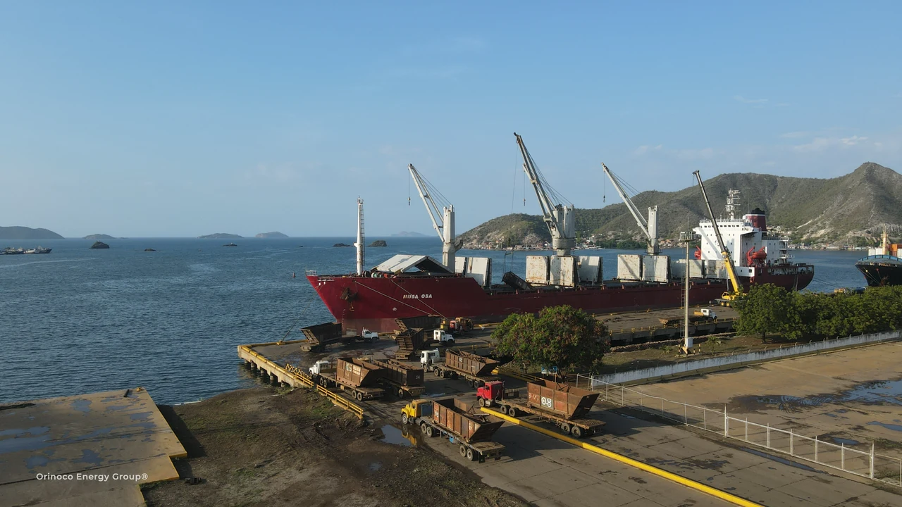
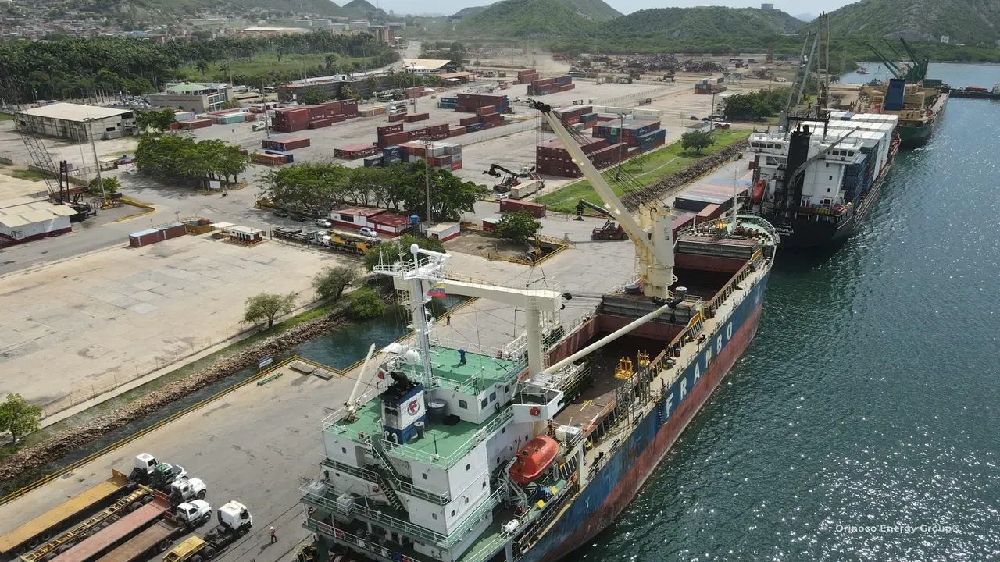
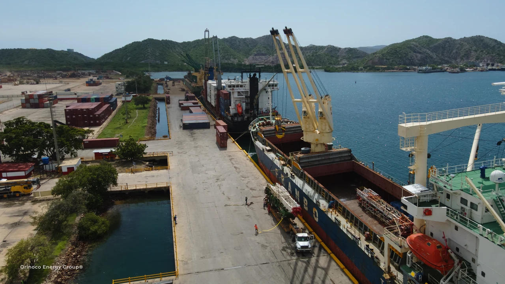
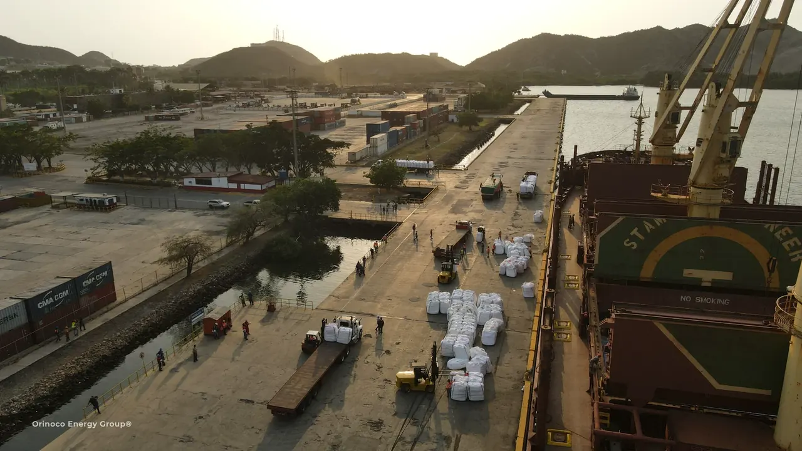
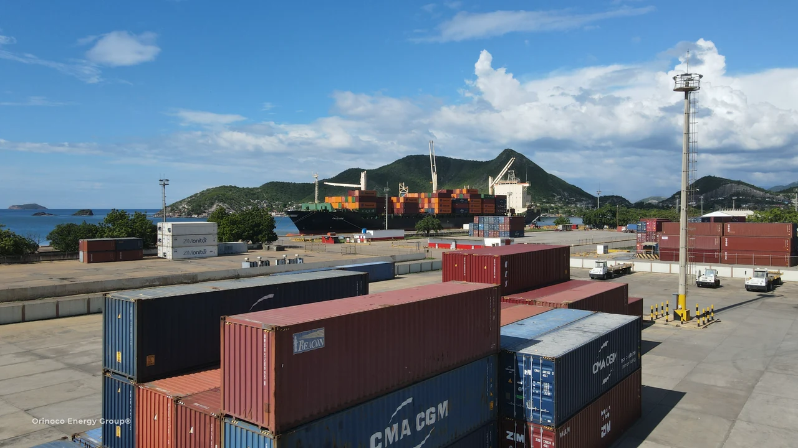
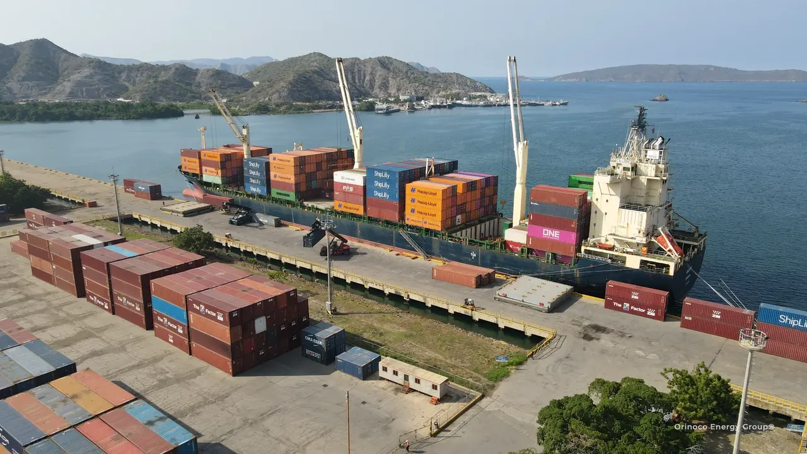

Servicios
PROCURA. ENERGÍA.
LOGÍSTICA INTEGRADA.
Procura, transporte internacional, operaciones portuarias, aduanas y entrega final. Elige los servicios que necesita tu proyecto.

01 / SERVICIO
Procura y suministro internacional
Búsqueda de proveedores y coordinación de compras industriales, con Houston como base clave de procura y la entrega planificada desde el inicio.
- Búsqueda de proveedores, solicitudes y comparación de cotizaciones
- Coordinación de órdenes de compra y seguimiento a proveedores
- Equipos industriales, maquinaria especializada y materiales para proyectos
- Coordinación de inspección, embalaje y preparación del embarque

02 / SERVICIO
Carga de proyectos e izaje pesado
Planificamos el traslado de equipos industriales, maquinaria sobredimensionada y componentes energéticos, incluidos izaje, operaciones portuarias y transporte terrestre especializado.
- Equipos industriales y maquinaria especializada
- Maquinaria sobredimensionada y componentes para proyectos energéticos
- Flat racks, plataformas especiales y planificación de embarques industriales
- Coordinación de maniobras y transporte terrestre especializado
- Fletamentos completos y parciales, carga suelta y entrega final

03 / SERVICIO
Transporte marítimo y operaciones portuarias
OEG Internacional coordina transporte marítimo, aéreo y terrestre en Estados Unidos y Venezuela. OCK aporta estiba, izaje pesado y operaciones portuarias.
- Coordinación de carga FCL, LCL y transporte multimodal
- Transporte aéreo y terrestre en Estados Unidos y Venezuela
- Coordinación de fletamentos y agenciamiento de buques
- Estiba y manejo de contenedores
- Operaciones portuarias y estiba coordinadas con los operadores locales correspondientes

04 / SERVICIO
Aduanas y entrega terrestre
ADUAVEN gestiona los trámites y documentos aduaneros en Venezuela. OEG Internacional coordina el transporte posterior y la entrega tras el levante o traslado autorizado.
- Trámites aduaneros en Venezuela a través de ADUAVEN
- Clasificación de mercancías, documentos comerciales y seguimiento al despacho
- Regímenes especiales, admisión temporal y coordinación de tránsito aduanero
- Levante portuario coordinado con transporte terrestre y entrega

05 / SERVICIO
Almacenamiento y red de aliados
Almacenamiento y preparación de la carga en origen o destino, según el plan de transporte.
- Recogida en origen, consolidación y preparación
- Coordinación de almacenamiento, inventario y cross-docking
- Preparación de la carga entre etapas del transporte
- Almacenamiento en destino y entrega a través de la red
Otras capacidades especializadas
MÁS ALLÁ
DEL EMBARQUE.
El grupo complementa la logística con servicios ambientales y soporte técnico en el proyecto.
Servicios ambientales
ECO GREEN ofrece saneamiento industrial y de pozos, remediación ambiental, recuperación de áreas operativas y limpieza portuaria e industrial.
Conoce ECO GREENIntegridad de activos e inspección
TUBINCA apoya la inspección de activos industriales, los ensayos no destructivos, la ingeniería y la infraestructura de campo para operaciones energéticas.
Conoce TUBINCA
Logística de materias primas y exportación
PREPARAR LA EXPORTACIÓN.
EJECUTAR EL EMBARQUE.
Logística de exportación para chatarra, metales, graneles, carga general y otros productos. Coordinamos recogida, documentos, operaciones portuarias y transporte internacional.
Explora materias primas y exportacionesTu próximo proyecto
VAMOS A
HACERLO AVANZAR.
Cuéntanos qué necesitas trasladar, desde dónde y hacia qué destino.
Conversemos sobre tu proyecto